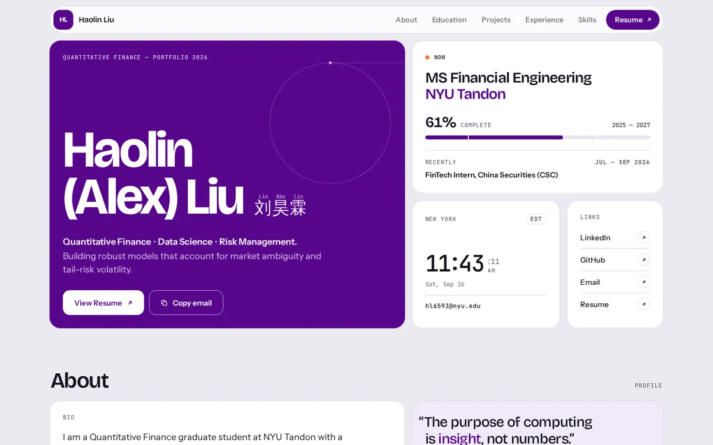
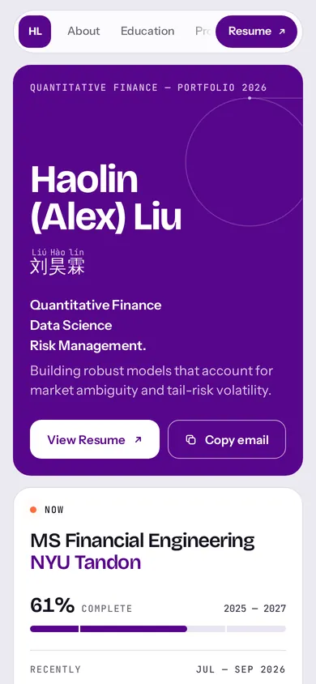
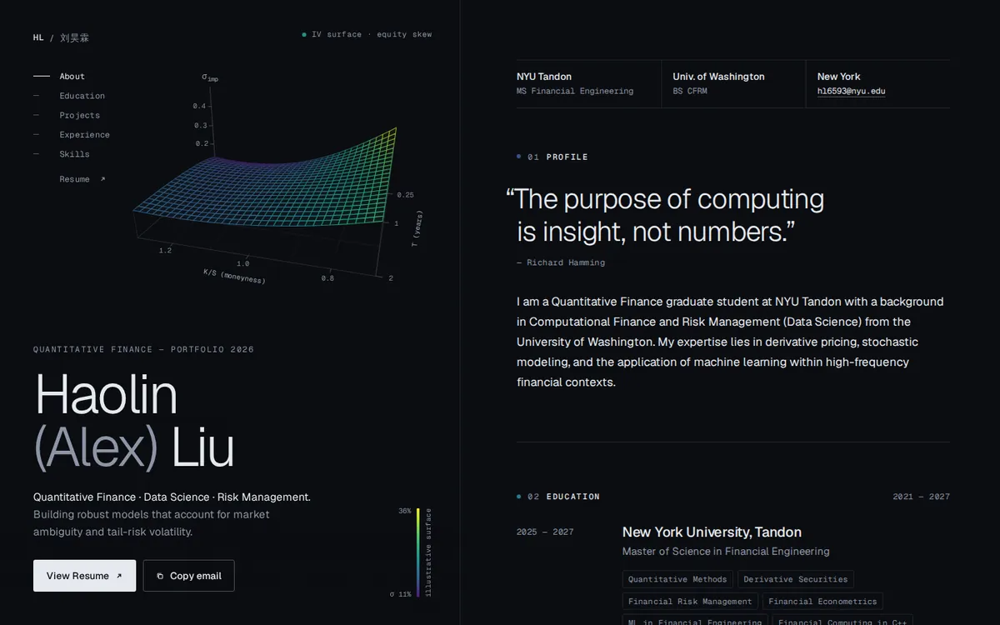
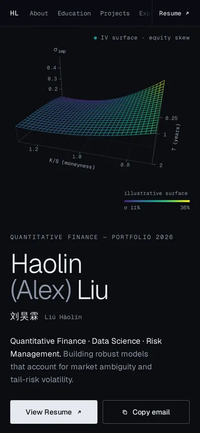
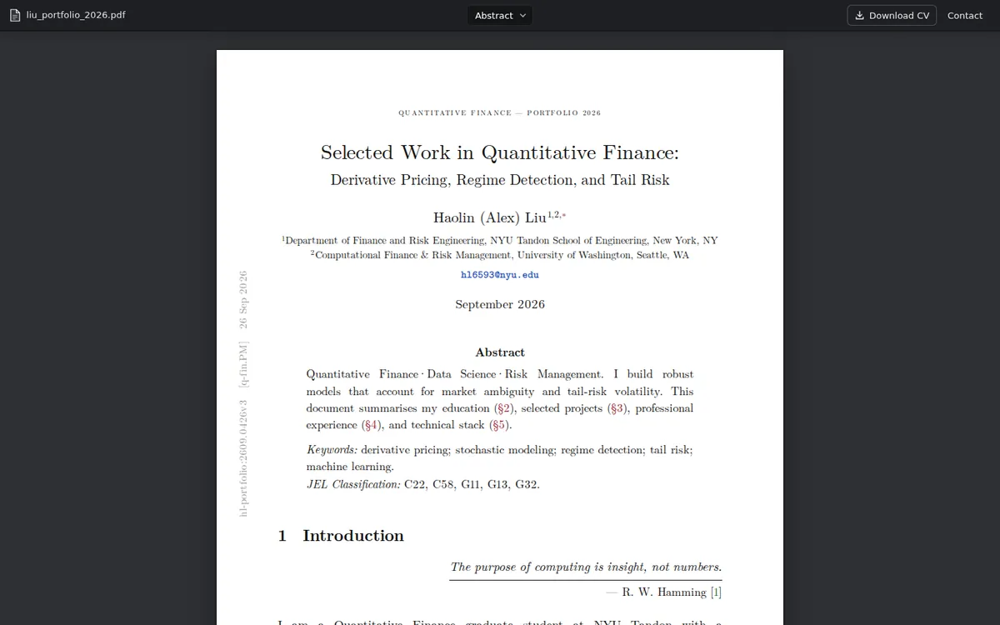
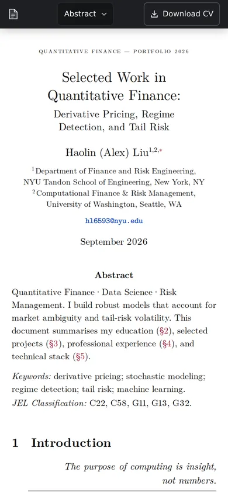
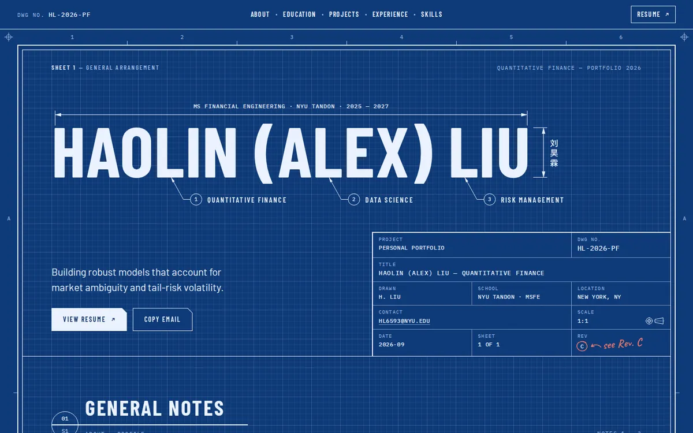
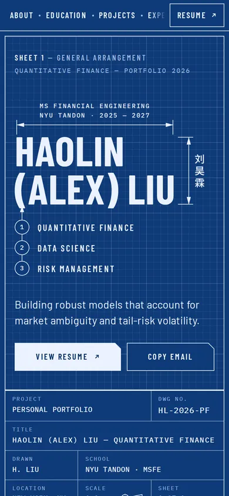
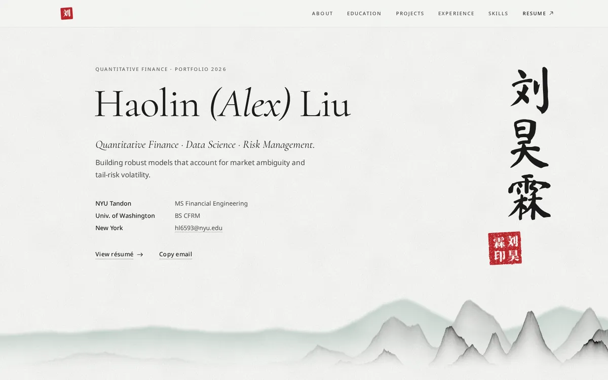
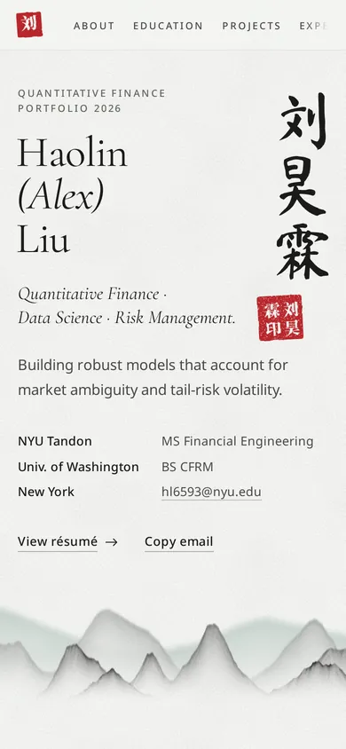

06
Bento便当格
所有信息装进一格格圆角卡片，像发布会的总结页：姓名、学校、项目、经历、联系方式一屏扫完。主色是 NYU 紫（UW 的校色也是紫），配实时纽约时间和学业进度条。
- 浅色
- 模块网格
- 信息密度高
- 最稳妥
- 配色
- 字体
- Bricolage Grotesque · Instrument Sans · JetBrains Mono
和第一轮（Swiss / Terminal / Editorial / Brutalist / Aurora）完全不同的 5 个方向。每个都是完整的网页，用的是你网站上的真实内容和项目 PDF，电脑和手机都已适配。
点缩略图或按钮打开完整页面。选好后告诉我编号（06–10），我把它做成正式的 React 版本；也可以混搭，比如「06 的布局 + 10 的印章」。


所有信息装进一格格圆角卡片，像发布会的总结页：姓名、学校、项目、经历、联系方式一屏扫完。主色是 NYU 紫（UW 的校色也是紫），配实时纽约时间和学业进度条。


首屏是一个实时旋转的 3D 隐含波动率曲面，用 matplotlib 的 viridis 配色。鼠标停在某个项目上，曲面会变形成对应的形状（期限结构、偏度、状态切换）。界面本身只用黑白灰，颜色只留给「数据」。


整个网站排成一篇量化金融论文：摘要、关键词、JEL 分类号、编号章节、真实公式（LPPLS、CAAR、GARCH、CVaR）、booktabs 表格、图注和参考文献，外面套一个 PDF 阅读器。正宗 LaTeX 字体。


把 Financial Engineering 当真：蓝图纸和网格、尺寸标注、引线编号、图纸标题栏。项目做成「零件清单」，三段实习做成「修订记录」Rev A → C。


新中式留白：竖排毛笔「刘昊霖」加朱红印章「刘昊霖印」，下面一抹水墨远山。章节用银行支票上的大写数字「壹贰叁肆伍」，项目用天干「甲乙丙丁」编号。
留着做对比。当前线上网站用的是 01 Swiss。